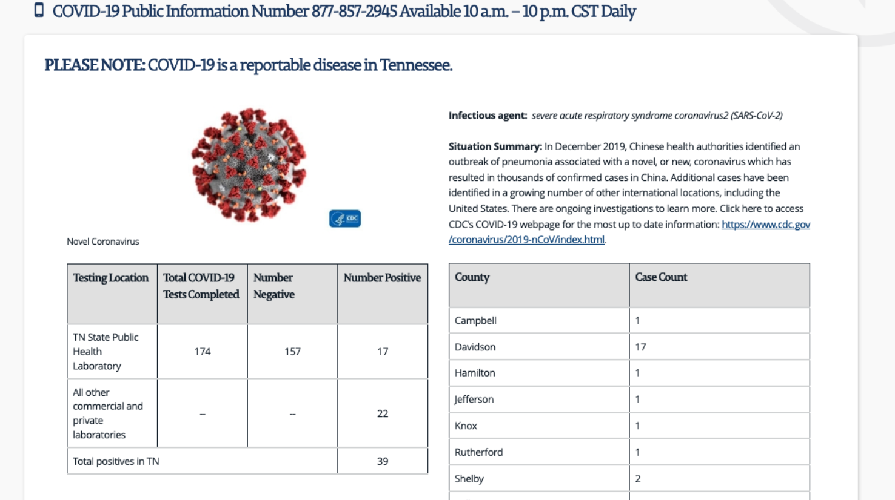
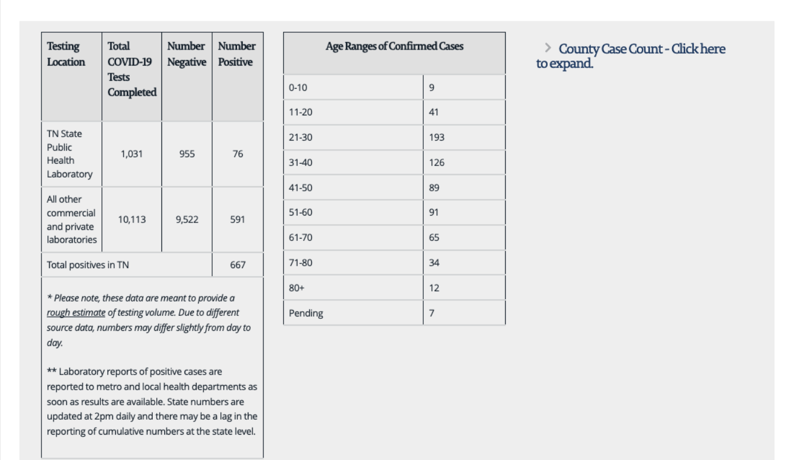
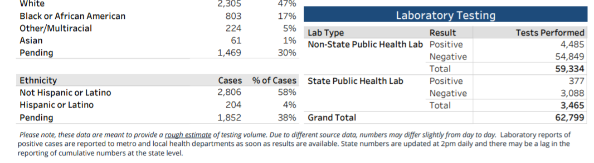

[TN] PCR Test Historicals
Issue number 707
the-daniel-lin opened this issue on July 30, 2020 at 11:02 am
Labels Historical Data not stale Backfill
State or US: Tennessee
Describe the problem Our current historical testing data has ‘Total PCR Tests (People)’ spanning from 5/13 - 6/11. There is a one day gap on 5/17 where the testing value was reported under ‘Total Tests (PCR).’ On 6/12, we began reporting all testing numbers under ‘Total Tests (PCR).’ This is in line with TN’s reporting change. On 6/12, they changed their testing number label to be explicitly PCR. This is what we see today in the PDFs.
However, we have a 5/19 outreach that is as follows:
Q: “Does “total tested” refer to people tested or specimens tested? Are antibody tests included in this figure, and if so does the state have plans to break them out?”
A: "The total number of negative and positive results posted on Tennessee’s websites includes PCR testing, which tests for current infection. Antibody testing is not included on our dashboards, but CDC is including antibody testing in the numbers they have reported.
Additionally, we only count a positive case once; subsequent positive tests on one individual do not count toward the total tests posted on Tennessee’s website. CDC’s total testing numbers include all tests performed; therefore, multiple positive tests on one individual will be counted in CDC’s U.S. COVID Testing dashboard. CDC includes multiple positive tests in their count of all tests performed, NOT in their count of cases."
*** This outreach question can be found in the Reporting team outreach sheet.
There are testing numbers spanning all the way back to our first screenshot for 3/15, but TN only begins reporting complete testing numbers on 3/24. When TN began releasing daily PDFs on 4/11, they also included testing numbers, albeit also ambiguous as to what type of testing the numbers referred to. Given the above outreach and the fact that testing trends seem to have been consistent throughout our time series, I think we can make the inference that we should be able to back fill through 3/24. This would be a backfill team decision, though.
Link to data source This data comes from TN’s daily Epidemiology and Surveillance Data PDF: https://www.tn.gov/content/tn/health/cedep/ncov/data.html
And the regular state site: https://www.tn.gov/health/cedep/ncov.html
You will have to use the Wayback machine for PDFs before 5/22, as our captures are blank before then.
Screenshot from state site on 3/15: https://covid-tracking-project-data.s3.us-east-1.amazonaws.com/state_screenshots/TN/TN-20200315-164033.png 
{kind=link}
Screenshot from complete test data on 3/24 (evening): https://covid-tracking-project-data.s3.us-east-1.amazonaws.com/state_screenshots/TN/TN-20200324-191014.png 
{kind=link}
Screenshot from 4/11 PDF (same testing format until 6/12): 
Values removed from Total PCR Tests (People): Changes (14).txt